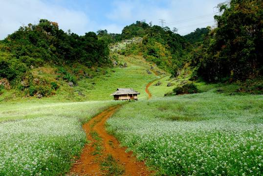
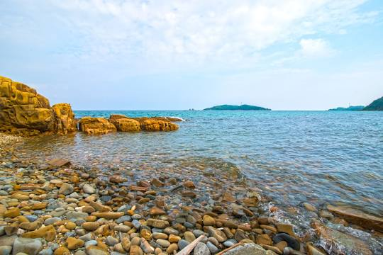

VÒNG QUANH VIỆT NAM

Sapa |
|
Nằm dưới chân dãy Hoàng Liên Sơn hùng vĩ và chỉ cách Hà Nội 5 - 6 giờ di chuyển bằng đường cao tốc, Sa Pa là điểm đến lý tưởng quanh năm. Ngoài những thửa ruộng bậc thang vào mùa lúa chín, Sa Pa còn hút khách nhờ vẻ đẹp của nhiều điểm đến khác.
Sa Pa có khí hậu mát mẻ nên phù hợp với những chuyến du lịch quanh năm. Bạn chỉ cần tránh mùa mưa bão từ tháng 6 đến đầu tháng 8, bởi thời tiết cực đoan có thể gây lũ ống, lũ quét, sạt lở... Một vài hoạt động bạn nên thử khi đến với Sapa: |
Vịnh Hạ Long |
|
Vịnh Hạ Long là một vịnh nhỏ thuộc phần bờ tây vịnh Bắc Bộ tại khu vực biển Đông Bắc Việt Nam, bao gồm vùng biển đảo của thành phố Hạ Long thuộc tỉnh Quảng Ninh. Là trung tâm của một khu vực rộng lớn có những yếu tố ít nhiều tương đồng về địa chất, địa mạo, cảnh quan, khí hậu và văn hóa, với vịnh Bái Tử Long phía Đông Bắc và quần đảo Cát Bà phía Tây Nam, vịnh Hạ Long bao gồm 1.969 hòn đảo lớn nhỏ, phần lớn là đảo đá vôi... Một vài trải nghiệm bạn nên thử khi đến với Vịnh Hạ Long: |

Mộc Châu |
|
Nằm cách trung tâm Hà Nội gần 200 km và 4 tiếng di chuyển bằng ôtô, Mộc Châu từ lâu đã được coi là một trong những điểm đến hấp dẫn nhất ở khu vực miền Bắc, đặc biệt vào mùa hoa mận dịp đầu năm.
Mộc Châu có bốn mùa xuân, hạ, thu, đông với thời tiết ôn hòa, quanh năm có hoa trái. Tháng 1, cao nguyên có màu xanh của những đồi chè nảy lộc, hoa đào, hoa mận, hoa mơ, mai anh đào... Một vài địa điểm bạn nên tham quan khi đến với Mộc Châu: |

Đảo Cô Tô |
|
Đảo Cô Tô là địa điểm du lịch lý tưởng ở miền Bắc với những bãi biển đẹp, bờ cát dài và phẳng cùng làn nước trong vắt.. Nếu bạn là người yêu thích khám phá thì quần đảo Cô Tô hoang sơ sẽ là nơi thích hợp dành cho những ngày nghỉ. Cô Tô với những bãi biển thanh sạch, cát trắng mịn tinh khôi và sóng nước dịu dàng êm trôi. Mỗi bãi biển lại mang những vẻ đẹp đặc trưng riêng biệt... Một vài điều bạn nên thử khi đến với Đảo Cô Tô: |